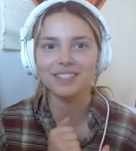
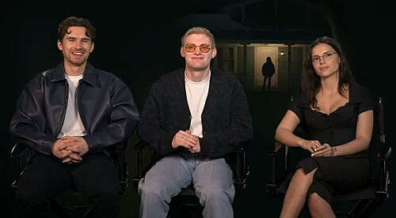
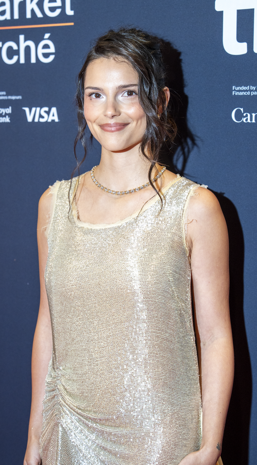

O primeiro papel de Navarrette foi na sitcom original do Snapchat, Denton's Death Date (2019), onde interpretou Veronica.
Em 2020, Inde foi escalada para a quarta temporada da série da Netflix, 13 Reasons Why, como Estela de la cruz.
Em 2021, Navarrette conseguiu crescer mais em sua carreira, ganhando o seu primeiro papel de destaque como Sarah Cortez em Superman & Lois (2021).
em 2023, foi anunciado que navarrette estava de despedida na quarta e última temporada por cortes de gastos.

Navarrette estrelou como Nikki Freeman no filme de terror Obessesão, que estreou no Festival Internacional de Cinema de Toronto em 5 de Setembro de 2025, antes de um lançamento nos cinemas americanos em 15 de Maio de 2026. Sua atuação recebeu aclamação da crítica, com os críticos destacando tanto sua vulnerabilidade física.
Louis Peitzman, da Vulture, chamou-a de uma atuação excepcional de Navarrette, especialmente por ser seu primeiro papel importante no gênero de terror.
Katie Rife, do RogerEbert.com, disse que suas cenas emocionais revelaram a humanidade por trás do comportamento violento da Nikki e tornaram a personagem mais trágica.

Antes da estreia de Obsessão nos cinemas. Navarrette estava escalada para estrear o filme de terror Invertigo.
Navarrette teve uma decisão ousada de recusar a propostas de propostas de um cache de R$ 12 Milhões de Reais e o outro com o lendário ator Leonardo DiCarpio, Para focar em um projeto de longo prazo no Universo Cinematográfico Marvel (UCM), para a saga dos mutantes (X-Men), onde ela intepretará a mutante Vampira (Anne-Marie),
Nikki Freeman / Freaky Nikki - Obessesão
Vampira / Anne-Marie - X-Men / UCM
Estela de la cruz - 13 Reasons Why
Teresa Flores - Boca de Fumo
Papel Indefinido - Invertigo